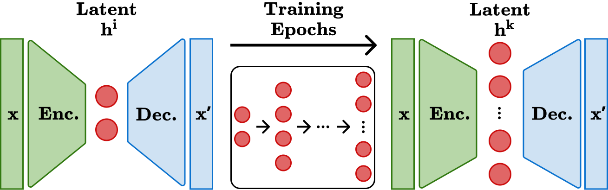

I am a Data Engineering and Analytics Master's student at TUM, passionate about the intersection of machine learning and healthcare. Previously, I completed my Bachelor's in Computer Science at Goethe University Frankfurt. Currently, I work as a working student at BMW in the field of data science, developing sound event detection models and working on data processing and training pipelines.
Developing Autoencoder: Incremental Bottleneck Expansion Leads to an Informed Latent
Space
David Vogenauer, Deyue Kong, Jonas Elpelt, Markos Genios, Matthias Kaschube
AAAI 2026 NeuroAI Workshop

This paper introduces the Developing Autoencoder (Dev-AE), a biologically inspired model that
incrementally expands its latent space during training, which we found fosters ordered,
sparse, and more diverse representations.
GitHub Repository
Full paper published soon
June 2025
Co-developing an AI-powered redaction tool (redact.nvology.com) that identifies and obscures sensitive information across images, audio, video, and PDFs,
offering both AI-driven suggestions and manual control.
April 2025
"Effects of Incrementally Increasing Latent Dimensionality in Autoencoders"
Extended the Developing Autoencoder (Dev-AE), showing that a growing latent space during
training, mimicking biological development, yields disentangled, sparse representations that
improve interpretability.
GitHub Repository
PDF
Ongoing: April 2026
Working on patient representation learning in biobank-scale datasets with LLM-guided feature
hierarchical encoding. Sponsored by the
TUM Chair of Artificial Intelligence in Healthcare and Medicine
&
Helmholtz AI for Health.
Project Description
April 2026
As part of a six-person student team, I worked on redesigning an inventory management workflow
for raw materials and tools. We developed a system that covers the full lifecycle from
receiving shipments and barcode-based identification to centralised storage, search,
reservation, and tracking across both desktop and mobile interfaces. The solution also
integrates automated notifications (such as end-of-life and calibration reminders) and barcode
scanning for fast, on-demand access to inventory data.
Poster
March 2026
Over a four-week hackubator with the Munich-based telemedicine startup
Wellster, supported by weekly mentorship from the VC firm
Spira Labs, my team built an internal platform that unifies fragmented healthcare data like clinical
records, medication history, and wearable metrics. We applied machine learning to cluster
similar patient profiles and built a smart assistant that translates each cluster into
plain-language insights, giving providers the tools to predict treatment outcomes, map patient
journeys, and reduce churn.
April 2026
We tackled a challenge with the Berlin-based startup
Get2Germany, which guides international doctors through the complex German medical licensing process.
Our team built an agentic vision-language pipeline that iteratively analyses application
documents and cross-references them against a curated set of requirements, catching errors
before submission to shorten overall waiting times.
LinkedIn Post
BMW Group
Working Student – Data Science in Brake Development
Oct. 2025 – Present
BMW Group
Intern – Data Analytics & Science in Brake Development
Apr. 2025 – Sep. 2025
Goethe University Frankfurt
University Tutor in Computer Science
Apr. 2024 – Mar. 2025
Email:
vogenauer.david@gmail.com
GitHub:
github.com/davidvgr
LinkedIn:
linkedin.com/in/david-vogenauer